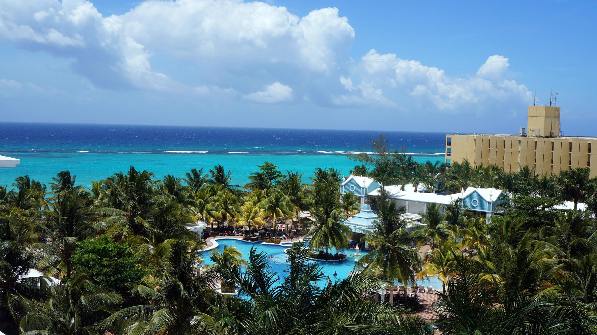

The Best Vacation Destination in the East
September 30, 2022 by Lenesia Brown
Bora Bora

This country is one of the best place to relax and go on vacation. At this country you will find beautiful beaches and luxurious resorts. You can go to Matira Beach to experience the crystal-clear water and soft sand. Even though this destination is on the pricey side it is definitely a place persons should visit.
There is wide range of outdoor activities that you can do at Bora Bora. These include snorkeling, fishing, sailing, jet-sking, kayaking and so much more. Also Bora Bora does not suffer from mass tourism so you can always find somewhere secluded. Bora Bora always have nice weather all year round so this destination is always a good idea no matter the season.
The Best Vacation Destination in the West
September 30, 2022 by Lenesia Brown
Jamaica
Jamaica has one of the best beaches in the Caribbean. Some other activities you can do in Jamiaca includes rafting along the Martha Brae River, climb the waterfalls at Dunn's River, visit the Luminous Lagoon, eat jerk chicken and so much more!
For rafting along the Martha Brae River, its one of the most popular things to do in Jamiaca. Here, you can drift along the river on bamboo rafts guided by locals. This is the perfect opportunity to relax and enjoy the tropical scenery. For climbing Dunn's River Falls, it one of the top attractions in Jamaica enjoyed by both locals and tourists! You can climb these falls with the aid of a guide where you can cool off in the refreshing pools at the top.